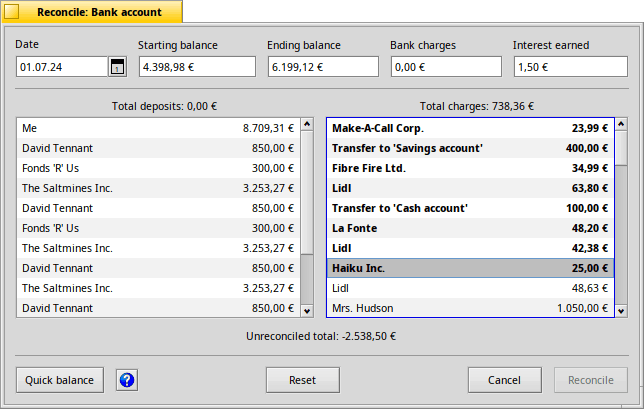

Reconcile
When it comes time to balance your checkbook, you will need to go here.
Many banks today group deposits together in one area on a statement, and expenses in another. CapitalBe does the exact same thing so you don't have to keep hunting around your statement.

To reconcile your account:
- Enter the and in the top boxes with numbers from your bank statement.
- If your bank imposed a service charge for something, such as an account maintenance fee, enter it into the box.
- If this account earns interest, put your monthly interest in the box.
Now all you have to do is double-click all the items in the lists below that you find on your statement. To indicate they're now accounted for, their text gets bold.
When the number of deposits and charges add up to the difference between the and amounts, you're finished.
If you made a mistake, you can click to start over.
Click when everything is in order.
Quick balance
The button can balance your checkbook with one click if all the deposits and charges before the statement date have cleared. When that happens, it will automatically reconcile your account, saving you all the clicking normally required to do that.
Previous: Reports